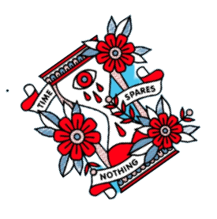
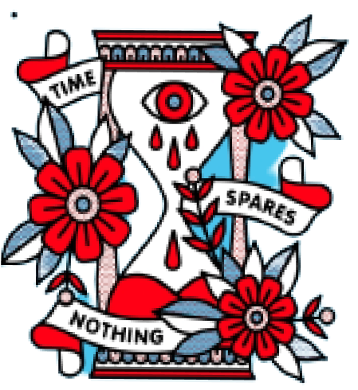

Fundado em 2020, o Xucro Hardcore é uma banda de Metal Hardcore, com foco no estado de São Paulo e redondezas, inspirados por outras bandas do mesmo nicho, a banda faz críticas sociais, e desabafos sobre as crises nacionais em forma de música.
Se tornando reconhecida em toda São Paulo, nossa prioridade é oferecer o máximo em qualidade ao público e aos profissionais envolvidos.
Sabemos da velocidade da informação hoje em dia e do quão rápido a música está mudando, por isso estamos sempre com a equipe qualificada, atualizada e pronta pra qualquer tipo de projeto que envolva uma coisa em especial: música boa. O Xucro Hardcore já realizou inúmeros shows em vários lugares de São Paulo, promovendo intercâmbio cultural e oferecendo aos amantes da música a possibilidade de ver, ao vivo, espetáculos e muito som de qualidade.
O objetivo é proporcionar à quem ouve sempre uma experiência musical memorável, montando uma integração com a banda com agendamento de shows e incluindo espaços novos no cenário paulistano, auxiliando na programação, produção e divulgação. Nosso lema é “Não deixar o Rock morrer nunca.”
